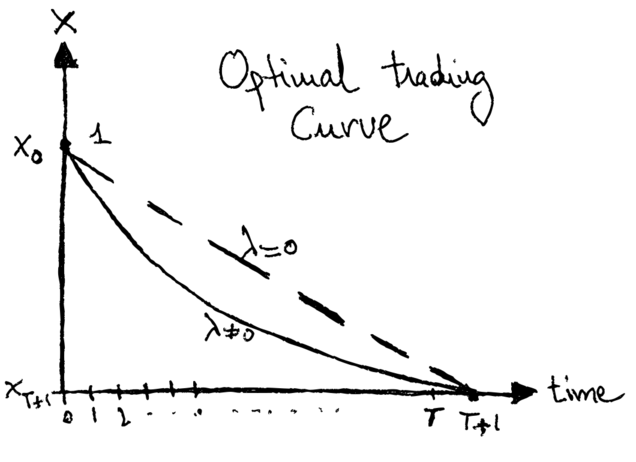

Algo Trading: The Optimal Execution Problem


Introduction
Algorithmic trading is omnipresent in the financial industry, where a form of automated trading executes the orders and decides the amount of shares, the entry point and/or the exit point. In the present blog post, we define and explore the problem of optimal execution in the context of algorithmic trading.
Optimal Execution
Let's imagine that you need to sell a large amount of shares $S_t$ at a certain time $t$ with $P_t$. If the amount of shares that you would like to sell (or buy) is of the same order than the amount of shares that are traded daily at your broker, then asking your broker to sell your shares will have an impact on the price at which your shares will effectively be sold. The question is then: what is the optimal strategy to sell an (potentially high) amount of shares such that the overall price of the asset is minimally affected ?
The expected transactions costs are a joint effect of the market impact and the market risk. One could consider that the evolution of the asset prices can be modeled by three terms:
$$ \begin{eqnarray} \label{eqn:pricedynamics} P_{t} = P_{t-1} +\theta S_{t} + \varepsilon_{t} \end{eqnarray} $$ where $P_{t}$ depends on the price at a previous instant, a linear price impact term $\theta S_{t} (\theta>0)$ that depends on the number of shares that are sold at a particular time t and of a white noise $\varepsilon_{t} \left(\varepsilon \sim \text{WN}(0,\sigma_t^2)\right)$. As usual, the expected value of the term $\varepsilon_{t}$ is $\mathbb{E}\left[\varepsilon_t| P_{t-1},S_t\right]=0$.
The optimal execution could be cast as the minimization of a cost function, where a total quantity of shares $S_{\text{tot}}$ is sold in a certain period. By defining each instant $t\in \{1,2,\cdots,T \}$, the optimal execution takes the form:
$$
\begin{eqnarray}
&&\min_{S_{t}} \mathbb{E}\left(\sum_{t=1}^T P_t S_t\right) \nonumber \\
&& \text{s.t.} \sum_{t=1}^T S_t = S_{\text{tot}} . \nonumber
\end{eqnarray}
$$
Bertsimas & Lo [1] considered the transaction costs and optimal execution
in the particular case of the price dynamics provided by equation (\ref{eqn:pricedynamics}).
The solution that they obtained is particularly simple and elegant: $S_1=S_2=\cdots=S_T=S_\text{tot}/T$.
This is called Time-Weighted Average Price (TWAP) . Such algorithm is part of a class of algorithms
that are called impact driven algorithms, where big trading orders are sliced into smaller orders to
minimize the market impact.
Implementation Shortfall Algorithm
Implementation Shortfall (IS) corresponds to the difference between the price at which the investor decides to trade and the average execution price that is achieved. The aim of such IS algos is to minimize not only the market impact, but also to account for the market risk.
We could consider such a case through the mathematical minimization of a utility function that accounts for the expectation and variance of a wealth process (i.e. the revenue upon completion of the trade).
By defining $x_t$ as the remaining quantity of the asset to buy (or sell) at time $t$, we could then conclude that the utility function
$$ \begin{eqnarray} \label{eqn:is_utility_function} \mathbf{J}_{\lambda}(x_1,\cdots,x_t) = \mathbf{E}(x_1,\cdots,x_t)+\lambda \mathbf{V}(x_1,\cdots,x_t) \end{eqnarray} $$ defines a trading strategy that minimizes the expected market costs for a given risk aversion $\lambda$. For a particular price dynamics of the type given by (\ref{eqn:pricedynamics}), the two terms in (\ref{eqn:is_utility_function}) are given by:
$$
\begin{eqnarray}
\mathbf{E}(x_t)&=& S_0 + \theta \sum_{t=1}^T \left(x_t -x_{t+1}\right)^2 \nonumber \\\
\mathbf{V}(x_t)&=& \sum_{t=1}^T x_t^2 \sigma_t^2 \nonumber
\end{eqnarray}
$$
Here, $\sigma_t$ comes from the variance of the white noise term $\varepsilon_t$. To find the
global minimum (see [3]) we need to find the $x_t$ that respects $\partial \mathbf{J}/\partial x_t=0$.
The partial derivative of $\mathbf{J}_{\lambda}$ with respect to $x_t$ is:
$$ \begin{eqnarray} \frac{\partial \mathbf{J}}{\partial x_t} = -2 \theta \left(x_{t-1} - x_t \right)+2\theta \left(x_t - x_{t+1} \right)+2 \lambda \sigma_t^2 x_t \nonumber \end{eqnarray} $$
which leads to the following recurrent equation:
$$
\left(2+\lambda\frac{\sigma_t^2}{\theta} \right) x_t - x_{t-1} = x_{t+1}
$$
under the constraint that at instant zero $x_0=1$ and $x_{T+1} =0$ the optimal trading curve takes the form of the Figure 1.

Figure 1. Such curve represents the percentage of shares that are sold through time when minimizing the effect of market impact and market risk. The trajacetory with $\lambda=0$ is the naive strategy that does not account for the variance. The risk averse trader would rather chose to sell quickly its shares.
There is therefore in this particular framework first developped by Almgren and Chriss [2] an explicit solution to the optimal execution problem that takes into account the risk-reward tradeoff through the parameter $\lambda$. As one can see in the Figure 1, the risk averse trader choses to sell quickly to reduce the exposure to volatility risk, even though the trading costs might be higher.
Reinforcement Learning
A clever way to think about the financial markets is through the context of reinforcement learning. The aim of reinforcement learning is to learn a policy $\pi \in \Pi$ that controls the system with states $s \in \mathcal{S}$ through the actions $x \in \mathcal{X}$ guided by the maximization of the total expected discounted rewards:
$$ \mathcal{R} = \sum_{t=1}^{T} \gamma^{t-1} R(s_t,x_t) $$
based on some reward function $R(s,x)$. The discount factor $\gamma$ is typically set to 1, because of the short time period considered in the problem of optimal execution. Several assumptions could be made about the actions, states and rewards for the particular problem of optimal execution. In Brian Ning et al [4], through a system of reinforcement learning they are able to outperfom the TWAP algorithm previously discussed.
The state space contains the information regarding the orders of the brokers at each instant, as well as any previous information. The typically assumption that is made is that the mapping $(s_t,x_t)\longmapsto s_{t+1}$ is Markovian. The two states that are central in the optimal execution problem are (i) the current time $t$ and (ii) the remaining shares $x_t$.
In the optimal execution problem, there is only one action, which it is to sell a certain amount of shares at a certain time. Therefore, the allowed actions is to be able to sell $x_t \in [0, q_t]$. One could also restrict the amount of shares to be sold to be an integer.
The rewards are a bit more difficult to define and are not universally well defined in a reinforcement learning context. At each period, the system gets a reward (positive or negative) to trade a certain amount of shares. To account for the transaction costs and the effect of impact risk, there is a typical penalty term that is added to the overall reward function. In Brian Ning et al [4], they consider a quadratic term in $x_t$ as the penalty term that accounts for the impact risk. Their reward function within an intra-period timestep $[t_{i},t_{i+1})$ is given by:
$$ R_{i} = q_t \left(p_{t,i} - p_{t,i+1} \right) - \alpha x_t^2 $$
where $\alpha$ represents a constant parameter, and $p_{t,i}$ the price at time $t_{i}$.
What's Next
Brokers are almost all electronic and automated. In that context, the optimal execution problem is central to provide faire execution prices to the market players. In the present blog post, we discuss the core of the problem in a very simplistic manner.
We have seen that we could take the perspective of minimization of a market impact cost function, through the TWAP algo, or also take into account the market risk through the implementation shortfall algorithm.
The tendency in the industry is to consider less the modelization of the processes taking place and go more into data driven models.
Reinforcement learning, and in particular deep-Q learning, have been explored in the literature and represent in my opinion the future of the financial industry. We will explore in future blog posts the advanced machine learning techniques that are being used in algorithmic trading.
If you would like to cite the present content, please use:
@article{fabio2020optimalexecution,
title = "Algo Trading: The Optimal Execution Problem",
author = "Capela, Fabio",
journal = "capfab.io/blog",
year = "2020",
url = "https://capfab.io/blog/optimal-execution-in-algo-trading"
}
References
[1] Dimitris Bertsimas and Andrew W Lo. Optimal control of execution costs. Journal of Financial markets, 1(1):1-50, 1998
[2] Robert Almgren and Neil Chriss. Optimal execution of portfolio transactions. Journal of Risk, 3:5-40, 2001.
[3] $\mathbf{J}$ has a global minimum, because all eigenvalues of $\mathbf{J}_{\lambda}$ are clearly
positive for the trivial case of $\theta=0$. Such conclusion can be extended by continuity arguments of the
eigenvalues.
[4] Brian Ning, Franco Ho Ting Lin, Sebastian Jaimungal, Double Deep Q-Learning for Optimal Execution
https://arxiv.org/pdf/1812.06600